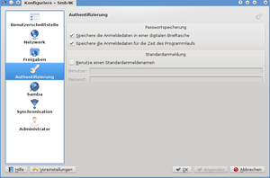
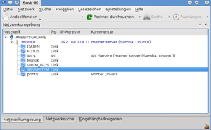

Smb4K
Dieser Artikel wurde für die folgenden Ubuntu-Versionen getestet:
Ubuntu 14.04 Trusty Tahr
Zum Verständnis dieses Artikels sind folgende Seiten hilfreich:
Das KDE-Programm Smb4K  ist ein erweiterter Browser für Samba- und Windows-Freigaben, der es ermöglicht, diese ins Dateisystem des Client einzubinden. Zwar bietet KDE bereits von Haus aus einige Möglichkeiten, Freigaben einzubinden, aber mit Hilfe von Smb4K sind auch Sonderwünsche und selten nachgefragte Spezialitäten möglich.
ist ein erweiterter Browser für Samba- und Windows-Freigaben, der es ermöglicht, diese ins Dateisystem des Client einzubinden. Zwar bietet KDE bereits von Haus aus einige Möglichkeiten, Freigaben einzubinden, aber mit Hilfe von Smb4K sind auch Sonderwünsche und selten nachgefragte Spezialitäten möglich.
Daneben bietet Smb4K noch eine einfache Möglichkeit zur Synchronisation von Dateien zwischen zwei Rechnern.
Installation¶
Folgende Pakete müssen installiert [1] werden :
cifs-utils (main)
smb4k (universe)
 mit apturl
mit apturl
Paketliste zum Kopieren:
sudo apt-get install cifs-utils smb4k
sudo aptitude install cifs-utils smb4k
Nach erfolgreicher Installation kann das Programm aus dem Startmenü über "Dienstprogramme -> Smb4K - Der Browser für SMB/CIFS-Freigaben" oder mit dem Befehl smb4k gestartet [2] werden.
Konfiguration¶
Zuerst sollte im eigenem Homeverzeichnis ein Ordner fest- bzw. angelegt werden, in dem die Freigaben eingebunden und angezeigt werden. Grundsätzlich können aber auch andere Ordner wie /media oder /mnt genutzt werden [3][4]. Dieser Ordner wird anschließend in den Einstellungen von smb4k (unter Freigaben) eingetragen. Werden keine eigenen Angaben gemacht, dann gilt als Standard /home/username/smb4k bzw. ~/smb4k. Auf Wunsch können auch ein Benutzername und das zugehörige Kennwort (unter Authentifizierung) gespeichert werden.

Darüber hinaus bietet das Programm eine Unmenge an Optionen für alle nur erdenklichen Spezialfälle. Möchte man z.B. eine Freigabe automatisch beim Hochfahren des Rechners einbinden, empfiehlt es sich, die Checkbox "Einstellungen -> smb4k einrichten -> Freigaben -> Vormals benutzte Freigaben beim Programmstart einbinden" zu aktivieren. Voraussetzung dafür ist allerdings, dass der Server mit Rechnername und IP-Adresse in der Datei /etc/hosts des Clients eingetragen wird. Weitere Informationen dazu liefert der Artikel hosts.
Benutzung¶
Drei Unterhalb des Fensters angeordnete Reiter bieten den Zugriff auf "Netzwerkumgebung", "Netzwerksuche" und "Eingehängte Freigaben".
Der Reiter "Netzwerkumgebung" zeigt die verfügbaren Netzwerkgruppen, Server und darauf befindliche Ordner an. Ein  Mausklick bindet eine Freigabe ein. Falls erforderlich, werden vorher ein Benutzername und das entsprechende Passwort abgefragt. Das Aushängen der eingebundenen Freigaben in der rechten Spalte kann z.B. mit der rechten Maustaste erfolgen.
Mausklick bindet eine Freigabe ein. Falls erforderlich, werden vorher ein Benutzername und das entsprechende Passwort abgefragt. Das Aushängen der eingebundenen Freigaben in der rechten Spalte kann z.B. mit der rechten Maustaste erfolgen.

Synchronisation¶
Wer beispielsweise abwechselnd mit einem Notebook und einem Desktop-PC arbeitet, kennt das Problem: Die zuletzt genutzten Dateien befinden sich immer auf dem jeweils anderen Rechner. Der Abgleich zwischen beiden Rechnern wird Synchronisation genannt. Hierbei werden die Dateien auf beiden beteiligten Computern automatisch - je nach Bedarf - kopiert bzw. gelöscht, so dass anschließend beide Datenbestände identisch sind. Weitere Einzelheiten dazu finden sich unter rsync.
Probleme und Lösungen¶
Falls Probleme beim Aushängen von Freigaben auftreten (device or resource busy), dann hilft die Option "Einstellungen -> smb4k einrichten -> Administrator -> Benutze Administratorrechte, um das Aushängen von (unzugänglichen) Freigaben zu erzwingen". Es könnte z.B. sein, das Strigi gerade Dateien einer Freigabe indiziert. Achtung: Vorher gilt festzustellen, ob sich tatsächlich noch Daten der Freigabe in Benutzung befinden (lsof)! Sonst kann diese Option zu Datenverlust führen. Von der an gleicher Stelle vorhandenen Option "Mit Administratorrechten ein- und aushängen" wird aus diesem Grund DRINGEND abgeraten!
Je nachdem wie der Samba-Server konfiguriert ist, kann es vorkommen, dass er nicht im Reiter "Netzwerkumgebung" aufgeführt wird. In diesem Fall trägt man die IP-Adresse des Servers im Reiter Netzwerksuche ein und doppelklickt auf das Suchergebnis. Anschließend kann man die Freigaben des Servers im Reiter "Netzwerkumgebung" aufrufen.
Ist auf dem Client eine andere Version von Samba installiert als auf dem Server, sind Probleme mit den CIFS-UNIX-Erweiterungen möglich. Dann hilft CIFS-UNIX-Erweiterungen deaktivieren.
 - LinuxUser 07/2006
- LinuxUser 07/2006- Erstellt mit Inyoka
-
 2004 – 2017 ubuntuusers.de • Einige Rechte vorbehalten
2004 – 2017 ubuntuusers.de • Einige Rechte vorbehalten
Lizenz • Kontakt • Datenschutz • Impressum • Serverstatus -
Serverhousing gespendet von